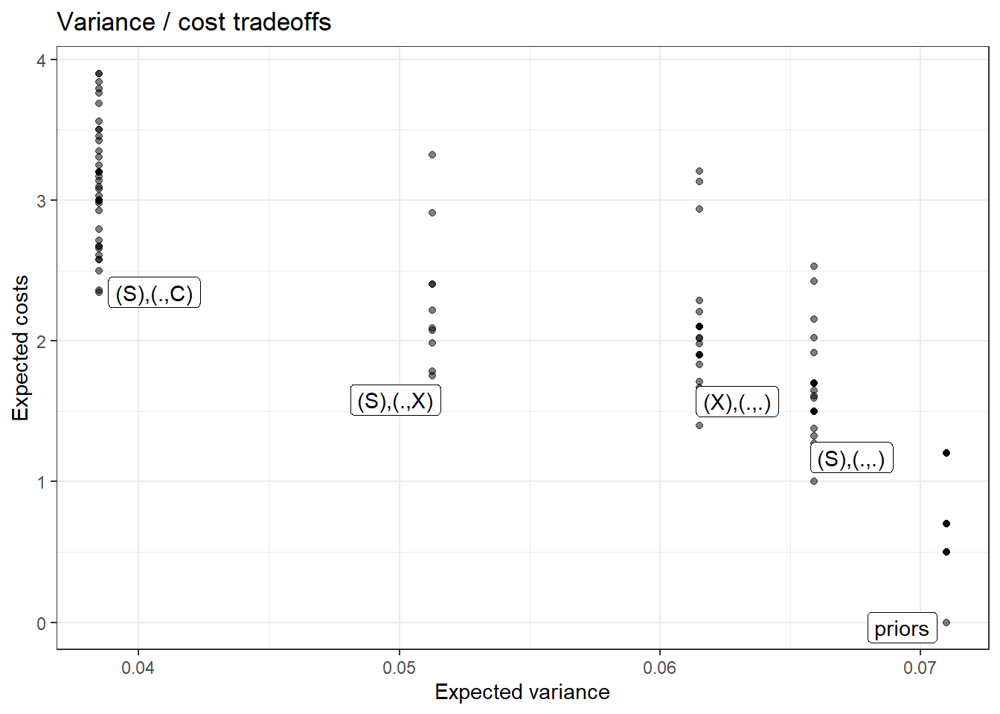
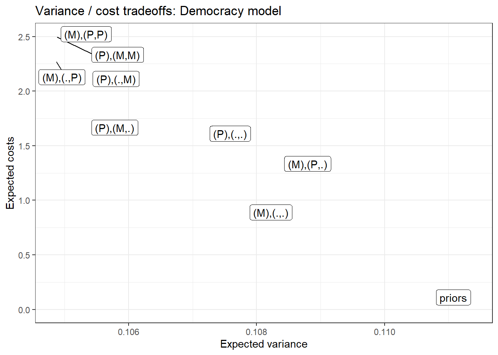

12 Clue Selection as a Decision Problem
Chapter summary
With this chapter, we begin to turn our attention to how causal models can inform research design. In the present chapter, we draw out the implications of the causal model approach for clue-selection strategies: for figuring out which pieces of evidence are likely to be most informative about a question of interest. We demonstrate procedures for assessing which clues minimize expected posterior variance and how to construct an optimal decision tree for determining a dynamic clue-gathering strategy.
The causal models framework can be used not just for analysis but also for guiding research design. This is the topic of the next three chapters. We start here by addressing the problem of clue-selection: determining which qualitative data to gather on a case when conducting process tracing..
Evidently, it makes sense to gather clues that have large probative value, but whether or not a given clue will have probative value depends on the model we are working with and the question we are asking. As we will also see, a clue’s informativeness can also depend on what other clues have already been collected. Finding out that the butler had no motive may be informative for the claim that he is innocent, but it will not be useful if we already know that he had no opportunity.
We have already provided some insight into the problem in Chapter 7, where we showed how relations of \(d-\)connection can tell us when a clue is possibly informative about a query. In this chapter, we go further to show how we can use our causal model to figure out which clues and clue-selection strategies are likely to be most informative about the query we seek to address.
12.1 A Model-Informed Approach to Clue Selection
The representation of inference problems as one of querying a Bayesian model points to a relatively simple method for selecting the most informative clues for collection. Consider, first, a situation in which one can invest in collecting various forms of evidence on a case and wants to know the expected gains from all possible collections of evidence that one could gather.
We can assess alternative strategies through the following procedure:
- Define the model.
- Define a query on the model.
- Define a data strategy: a set of clues for which one might search (e.g., observe the value of \(Y\)).
- Given prior data, figure out the probability of different possible realizations of the new data.
- For each possible realization, calculate the posterior variance we would have if we observed that realization.
- Calculate the expected posterior variance for the data strategy by taking a weighted average of the variances arising from the different data realizations, with weights given by the probability of observing the data-realization in question.
- Repeat steps 3-4 for different data strategies that we wish to compare.
If repeated for different sets of clues, this procedure then allows us to choose the clue strategy with the lowest expected posterior variance.
A still more sophisticated approach would, for multiple clues, take sequence into account: It would tell us which clues to search for later in the process given the realization of clues sought earlier. The path-dependence of clue selection arises from the possibility that the informativeness of a clue may depend on the value of other nodes in the model. A given clue \(K_2\), for instance, may be informative if another clue \(K_1\) has the value of 1 but not if it has the value 0.
We provide tools for both of these approaches and illustrate them below for a simple model of government survival as well as for our democratization model from Chapter 8.
12.1.1 Clue Selection with a Simple Example
Consider a model of government survival in office in which retaining office depends on not being perceived as corrupt by the public. We show a DAG for this model in Figure 12.1. We take two conditions as root nodes in this model. First, a country may or may not have a free press (\(X\)). Second, the country’s government may or may not be sensitive to public opinion (\(S\)).1 We set equal prior probabilities on the two values of \(X\) and on the two values of \(S\). In terms of causal relations, we then allow that the government’s decision about whether to engage in corruption (\(C=1\)) may depend on whether the government is sensitive to public opinion and whether there is a free press (that might reveal that corruption). Moreover, we allow that whether the press will report on the corruption (\(R=1\)) may depend on whether there is government corruption and whether the press is free. Finally, whether the government will be removed from office (\(Y=1\)) may depend on whether it has acted corruptly and whether this gets reported in the press.
We work with a highly restricted version of this model to simplify the illustration. We will call this version the base survival model and later also consider two variants that have the same DAG but different nodal types permitted. At node \(C\), we allow only two types: Either corruption is always present (\(\theta^C_{1111}\)) or corruption is always present except when there is both a free press (\(X=1\)) and sensitivity to public opinion (\(S=1\)) (\(\theta^C_{1110}\)). At \(R\), we allow only for \(\theta^R_{0001}\) and \(\theta^R_{0000}\): the possibility that there is reporting on corruption if and only if there is corruption and a free press, and the possibility that there is never reporting on corruption. For both \(C\) and \(R\), we put equal prior probabilities on all permitted nodal types. Finally, at \(Y\), we restrict to just one nodal type, \(\theta^Y_{0001}\): The government will remain in office unless there is both corruption (\(C=1\)) and reporting on corruption (\(R=1\)).
To summarize the intuition, governments will only fall if there is both corruption and reporting on corruption. We are uncertain whether or not corruption is always present; but if corruption is ever absent, it can only be because there exist both a free press and a government that cares about public opinion. We are also uncertain whether or not media reporting on corruption is always absent; but if it is ever present, it can only be because there is both corruption and a free press. One implication is that governments that are sensitive to public opinion will never fall because they will always eschew corruption when a free press—the only mechanism that can generate reporting on corruption—is present. In turn, the presence of a free press can only matter for government survival if governments are not sensitive and thus do not strategically adjust their behavior in response to the risk of reporting.
Suppose now that our query is whether \(X\) has a positive effect on \(Y\), and we want to know which clues will be most helpful in answering this question. Using the model, we can ask how likely different data realizations are under each possible clue strategy and what we would infer about our query from each possible data realization, given existing data. We illustrate for a situation in which we already know that \(Y=0\).
Table 12.1 shows results for each possible clue strategy.2 The \(S, X, C, R, Y\) columns of Table 12.1 define the data realizations. The matrix includes all combinations of possible realized values for all available clue strategies, given that we have already observed \(Y=0\). Note that since we can already infer that \(R=0\) from \(Y=0\), we omit strategies that seek data on \(R\). A “0” or “1” represents the observed value for a node that we have chosen to observe while “?” indicates that a node is not observed under the given strategy. Thus, for instance, in the first five rows, we are collecting data on all nodes. In the next three rows, we have sought data on all nodes except \(S\).
We also indicate the probability of each realization given the strategy, the inference we would make from each data-realization—that is, the posterior probability that \(X\) has a positive effect on \(Y\), given that \(Y=0\)—and the posterior variance.
| strategy | S | X | C | R | Y | prob | posterior | variance |
|---|---|---|---|---|---|---|---|---|
| SXC | 1 | 1 | 0 | 0 | 0 | 0.154 | 0.000 | 0.000 |
| 0 | 0 | 1 | 0 | 0 | 0.308 | 0.500 | 0.250 | |
| 1 | 0 | 1 | 0 | 0 | 0.308 | 0.250 | 0.188 | |
| 0 | 1 | 1 | 0 | 0 | 0.154 | 0.000 | 0.000 | |
| 1 | 1 | 1 | 0 | 0 | 0.077 | 0.000 | 0.000 | |
| XC | ? | 1 | 0 | 0 | 0 | 0.154 | 0.000 | 0.000 |
| ? | 0 | 1 | 0 | 0 | 0.615 | 0.375 | 0.234 | |
| ? | 1 | 1 | 0 | 0 | 0.231 | 0.000 | 0.000 | |
| SC | 1 | ? | 0 | 0 | 0 | 0.154 | 0.000 | 0.000 |
| 0 | ? | 1 | 0 | 0 | 0.462 | 0.333 | 0.222 | |
| 1 | ? | 1 | 0 | 0 | 0.385 | 0.200 | 0.160 | |
| SX | 0 | 0 | ? | 0 | 0 | 0.308 | 0.500 | 0.250 |
| 1 | 0 | ? | 0 | 0 | 0.308 | 0.250 | 0.188 | |
| 0 | 1 | ? | 0 | 0 | 0.154 | 0.000 | 0.000 | |
| 1 | 1 | ? | 0 | 0 | 0.231 | 0.000 | 0.000 | |
| C | ? | ? | 0 | 0 | 0 | 0.154 | 0.000 | 0.000 |
| ? | ? | 1 | 0 | 0 | 0.846 | 0.273 | 0.198 | |
| X | ? | 0 | ? | 0 | 0 | 0.615 | 0.375 | 0.234 |
| ? | 1 | ? | 0 | 0 | 0.385 | 0.000 | 0.000 | |
| S | 0 | ? | ? | 0 | 0 | 0.462 | 0.333 | 0.222 |
| 1 | ? | ? | 0 | 0 | 0.538 | 0.143 | 0.122 | |
| Prior | ? | ? | ? | 0 | 0 | 1.000 | 0.231 | 0.178 |
Since each inference, under each data-realization, also has an associated posterior variance, or level of uncertainty, it is easy to assess the expected posterior variance from a given clue strategy. We calculate the expected posterior variance from a given strategy as a weighted average of the posterior variances associated with each possible data-realization under the strategy, with weights given by the probability of each data-realization arising.
We then operationalize higher levels of expected learning from a strategy using the expected reduction in posterior variance upon observing the data. We present the expected reduction in posterior variance for each possible clue strategy, given the prior observation of \(Y\), in the upper panel of Figure 12.2 (ignore the lower panels for the moment). We can see a couple of patterns here:
By far, the biggest gains in expected learning come from observing \(X\). We can see this most readily by comparing the one-clue strategies to one another. But in general, any strategy that includes observing \(X\) always does substantially better than the comparable strategy that excludes \(X\). The intuition here is fairly straightforward: If we want to know whether \(Y=0\) was caused by \(X=0\), and start out very uncertain about \(X\)’s value, we should expect to learn a good deal from figuring out whether \(X\) is in fact equal to \(0\).
There are also considerable gains from observing \(S\) or \(C\) by themselves. Consider, first, why observing \(S\) is informative. \(S\) is potentially informative because it tells us something about whether \(X\) can affect \(Y\) by affecting \(R\). Remember that a government is removed only if there is both corruption (\(C=1\)) and reporting on corruption (\(R=1\)). Moreover, there is only reporting on corruption (if ever) if \(C=1\). Thus, for both of these reasons, \(X\) can only have a positive effect on government removal (by causing reporting on corruption) if \(C=1\): That is, if there is corruption. And \(S\) (government sensitivity) tells us something about what \(C\)’s value is likely to be if \(X\) were set to 1, that is, if there is a free press.
Specifically, if we observe \(S=0\), then we know for sure that \(C=1\), regardless of \(X\), since \(C\) is always 1 when \(S=0\) under both permitted nodal types for \(C\). If \(S=1\), on the other hand, there is a lower chance that \(C\) would be equal to 1 if \(X\) were set to 1: For one of \(C\)’s permitted nodal types, there is always corruption; but for the other type, sensitive governments avoid corruption when there is a free press, so \(X\) moving to 1 would give us \(C=0\). Recall that we have put equal prior probabilities on these two nodal types. Thus, if we observe \(S=1\), we conclude that there is a lower probability that \(C\) will take on the value necessary for \(X\) to exert a positive effect on \(Y\) than if we observe \(S=0\).
Why, then, is \(C\) informative? If we observe \(C=0\), then we know that \(X\) must be equal to 1 since, under permitted nodal types for \(C\), there is an absence of corruption only in the presence of a free press and sensitive governments. And if \(X=1\) with \(Y=0\), a positive effect is ruled out with certainty. If we observe \(C=1\), then there remains some possibility that \(X=0\) as well as some possibility \(C\) would remain at 1 if \(X\) were set to 1 (depending on \(C\)’s unknown nodal type), allowing \(X\) to yield a positive effect on \(Y\) through \(R\).
There are no gains from observing \(R\) if \(Y=0\). This result follows from our table of data possibilities consistent with \(Y=0\) (Table 12.1). As we can see, there is no possibility of observing anything other than \(R=0\) if we have already seen \(Y=0\). We can see why by thinking, jointly, about how \(Y\) is determined and how \(R\) is determined. \(Y\) can be 0 either because \(C=0\) or because \(R=0\). So if \(R\) were equal to \(1\), this must mean that \(C\) was \(0\). However, a necessary condition for \(R\) to be 1, under \(R\)’s permitted nodal types, is \(C=1\) and \(X=1\). In other words, the condition under which \(R\) could be 1 is a condition under which \(Y\) would not be 0. Thus, if we already know \(Y=0\), we know \(R=0\), and there is no gain from actually looking for \(R\).
Once we observe \(X\), the next-most informative clue to add to our research design is \(S\): \(X, S\) has the greatest expected reduction in posterior variance of any of the two-clue strategies. And, in fact, there are no gains to adding \(C\) to \(X\), relative to observing \(X\) by itself.
Let us develop the intuition underlying this result.
Imagine that we have already observed \(X\)’s value. If \(X=1\), then (given \(Y=0\)), a positive effect is immediately ruled out with certainty, rendering any further observations of no value. If we observe \(X=0\), however, then (under this causal model) we know for certain that \(C=1\), simply because \(C=1\) for both of \(C\)’s permitted nodal types when \(X=0\) (there is always corruption when there is no free press). Thus, there is nothing to be gained by observing \(C\). (We have already seen why there is nothing to be gained from observing \(R\).)
Why are there possible gains to observing \(S\) even if we’re going to observe \(X\)? \(S\) is informative because it tells us something about whether \(X\) can affect \(Y\) by affecting \(R\). The potential gains from observing \(S\) with \(X\) arise from the possibility that we may see \(X=0\) (since \(X=1\) would decide the matter by itself). If \(X=0\), then we still need to know whether \(Y\) would be 1 if we changed \(X\) to 1. As discussed above, that depends on whether \(C\) would be \(1\) if \(X\) were set to 1, and (as, again, explained above) \(S\) is informative on that matter.
We also see—and it follows from the above logic—that we cannot improve on an \(X, S\) strategy by gathering more data. Thus, if the search for information is costly, looking only for \(X\) and \(S\) dominates all three- and four-clue strategies.
Clues can be more informative jointly than separately, and the expected gains from observing one clue can depend on which other clues we plan to observe. To see this, observe that, among the one-clue strategies, observing \(C\) by itself is slightly more informative than observing \(S\) by itself. However, if we are planning to observe \(X\), then the gains flip, and it is only \(S\) that offers additional useful information. As we have discussed, observing \(X\) makes observing \(C\) uninformative while \(S\) remains informative as a moderator of \(X\)’s effect.
We would add that the pattern here forms part of a broader point that we wish to emphasize in this chapter: While process tracing often focuses on examining steps along causal pathways, it will often be the case that we learn more from moderators, like \(S\) in this model, than from mediators, like \(C\) and \(R\). We return to this point below.
12.1.2 Dependence on Prior Beliefs
Optimal clue strategies can depend on our prior beliefs about causal relationships among the variables in the model. We illustrate this point here, examining how the evaluation of clue strategies shift as we relax restrictions on nodal types and set informative priors over nodal types.
Relaxing restrictions. In the analysis above, we allowed for just two (of 16 possible) nodal types at both \(C\) and \(R\), effectively expressing strong beliefs about how \(C\)’s and \(R\)’s values are determined. But what if we are less certain than this?
Suppose we are not sure that corruption can be prevented only through a combination of a free press and government sensitivity. We think it possible that government sensitivity might be sufficient: That \(S\) might negatively affect \(C\) regardless of \(X\)’s value. (Perhaps, for instance, there are means other than via a free press through which the public might learn of government corruption.) We allow for this causal possibility by expanding the set of kept nodal types for \(C\) to include \(\theta^C_{1010}\) in defining the model.
The evaluation of strategies under this adjusted set of beliefs, for the same query (whether \(X\) has a positive effect on \(Y\)) and prior data (\(Y=0\)) as before, is displayed in the middle panel of Figure 12.2.
We see that, among one-clue strategies, observing \(X\) is still the best choice. The best two-clue strategy is also still \(X, S\). Where things change most significantly, however, is among three-clue strategies: now, we can do even better by additionally observing \(C\). The reason is that, with greater uncertainty about its nodal types, \(C\)’s value is no longer known when \(X=0\): It is now possible that \(C=0\) when \(X=0\) since we think it possible that \(C\)’s nodal type is \(\theta^C_{1010}\). Since \(C\)’s value bears on whether \(X\) can have an effect via \(R\), we can thus, in this situation, potentially learn something by observing \(C\), even if we have already seen \(X\) and \(S\).
We can also see \(C\)’s enhanced informational value in other places. Among one-clue strategies, observing \(C\) alone generates greater learning here than it does under the base model. More strikingly, among two-clue strategies, we see that observing \(C\) can now generate learning even if we have already observed \(X\) (whereas there was no gain from strategy \(X, C\) relative to \(X\) under the base model). While \(X, S\) is still a better strategy than \(X, C\), the change in diagnosis could matter if, for instance, we cannot observe \(S\) for some reason or if observing \(S\) is much more costly than observing \(C\).
Moreover, the expected variance reduction from observing \(S\) is also greater under the new model, for most one- and two-clue strategies. For the informal intuition here, note that \(S\) is potentially informative about \(C\)’s value as a parent of \(C\). And we now believe (with the added nodal type for \(C\)) that there may be an additional way in which \(S\) could matter for \(C\), and thus provide information about its value. Moreover, since the added nodal type has \(S\) exerting a negative effect on \(C\) regardless of \(X\)’s value, \(S\) can now be informative even if we have already observed \(X=0\).
Finally, we can see that nothing has changed in regard to \(R\), about whose nodal types we have retained the same beliefs. It is still uniformly unprofitable to observe \(R\) because we still know \(R\)’s value whenever \(X=0\).
This exercise also suggests a further interesting principle of clue-selection: that potential informativeness rests on uncertainty about what we will find.
Changing probabilities. We can also see what happens when, rather than permitting new nodal types, we have more informative beliefs about the prevalence of permitted types. Suppose we believe most governments to be sensitive to public opinion. This would imply that we should put greater weight on \(\theta^S_1\) than on \(\theta^S_0\).
The third panel of Figure 12.2 shows the evaluation of strategies for a model in which we put a 90% prior probability on \(S=1\). A number of features stand out. First is the lower reduction in variance from most strategies under the new model: Having a more extreme belief about \(S\)’s value gives us stronger prior beliefs about whether \(X\) could have caused \(Y\) since such an effect depends on \(S\)’s value. A second striking difference is that searching for \(S\) is expected to be much less informative in this model. The reason is simple: We now have a strong prior belief about what we are likely to find when we search for \(S\). We could be surprised, but we should not expect to be. In the original model, in contrast, we were maximally uncertain about \(S\)’s value—believing it had a 0.5 chance of being 1—and so there was much more to be gained by looking. Finally, we see that a search for \(C\) becomes more fruitful than before; the reason is that with \(S=1\) likely, \(C\) is now more sensitive to (and informative about) \(X\)’s value.
The highest level lesson from this discussion is that even for a very simple model, assessing which clues are most information – in combination with which other clues – is relatively complex. It becomes more complex as models become more complex. Even still, there is a relatively simple procedure that can be applied to answer the question that can be used once a causal model has been fully specified.
12.1.3 Clue Selection for the Democratization Model
We now apply this approach to the model of democratization that we worked with in Chapters Chapter 8 and Chapter 10.
We start by specifying the democratization model, with negative effects ruled out for \(I \rightarrow M\), \(M \rightarrow D\), and \(P \rightarrow D\) and a positive direct effect ruled out for \(I \rightarrow D\). ). We set flat priors over all remaining nodal types. We will call this our “base” model. We then examine how optimal clue selection strategies change as we modify the query and the data.
12.1.3.1 Base Model
Let’s assume that we have already observed both levels of inequality and the outcome of democratization in a case, and we want to know whether inequality caused, or would cause, democratization in that case. The decision we confront is what combination of the other nodes—mobilization or international pressure—we should select to collect data on: The available strategies are to observe nothing further; to observe \(P\) only; to observe \(M\) only; or to observe both \(P\) and \(M\). We can imagine that there are different cost implications of these different strategies.
We illustrate the consequences of these options for our query in two ways. First, in Figure Figure 12.3, we show the possible inferences we could draw from different clue strategies. This figure displays all data realizations that might result from all possible clue-selection strategies, the inference we would draw about our query from each realization of the data, and the probability of each realization occurring under each strategy. In each column of the figure, we show these quantities for a different combination of \(I, D\) values observed in a case prior to clue-selection. Within each graph in the figure, the size of the plotted point corresponding to each data-realization is scaled to the probability of that data-realization occurring given the model and the case’s \(I\) and \(D\) values. These data probabilities constitute key information for evaluating a clue strategy: A given strategy might allow for a potential data realization that would shift our inferences by a large amount if observed, but that data-realization might be highly unlikely to occur.
In reading Figure Figure 12.3, we want to examine how much inferences shift to the left or right relative to our “prior” belief shown in the top row of graphs—that is, what we infer from only have observed \(I\) and \(D\). In an \(I=0, D=0\) case, for instance, we can see that if we search only for \(P\), our inference about the probability that \(I\) mattered for \(D\) will shift down slightly if we observe \(P=0\) but will shift up substantially if we observe \(P=1\). If we look for \(M\) only, we see that the more impactful potential observation (\(M=1\)) is much less likely to be observed, given our model and \(I=0, D=0\), than the less impactful observation (\(M=0\)). This will necessarily limit how fruitful we expect a strategy of searching for \(M\) alone to be.
In Figure Figure 12.4, we average across the possible ways that each clue-selection strategy might turn out to calculate the reduction in uncertainty (i.e., in variance) that we expect to achieve under each strategy. We can think of expected uncertainty reduction, our measure of expected learning, as a summary assessment of a strategy’s value. Again, we plot this uncertainty-reduction separately by column for each \(I, D\) combination. Thus, strategies that shift us further to the right, toward a larger reduction in uncertainty, are those from which we expect to learn the most.
One clear message emerging from Figure Figure 12.4 is that, if we have to choose one of the two clues to go looking for, then we should choose \(P\). Given our model (including restrictions of and priors on the types), we expect to reduce our uncertainty more by learning about an alternative cause of democratization (international pressure) than by learning about a mediator (mobilization), regardless of the \(I\) and \(D\) values in the case.
We also see differences depending on the case’s \(I\) and \(D\) values. In particular, we see that the mediator, \(M\), is much more informative for \(I=D\) cases (first and fourth columns). This is because, given the restrictions on nodal types in our model, these are cases in which the causal effect we are looking for is one that could have operated via the mediator—that is, because when any \(I \rightarrow D\) effect in such cases has to be positive. In contrast, \(M\) is informative only as a moderator of the cause’s direct effects when the \(I \rightarrow D\) effect can only be negative (second and third columns, where \(I \neq D\)). This finding illustrates an important, more general point: The process tracing evidence that will be most informative to go looking for can depend on what it is we have already observed.
12.1.3.2 Revised Model, Revised Query
We can also see how the comparison across clue strategies changes if we revise the model or change the query. To illustrate, let’s first revise the query: imagine that we are interested in understanding whether inequality plausibly mattered for democratization via mobilization.
The model revision that we contemplate removes a restriction, allowing the possibility of a negative effect of inequality on mobilization. We now set the probability of a negative \(I \rightarrow M\) effect at 0.1 instead of 0. Our new, pathway-related query is defined as follows: If we could keep \(I\) constant but vary \(M\) over the values that it would take as \(I\) changes from 0 to 1, would \(D\) then change, (given the observed values of \(I\) and \(D\))?3
Figure Figure 12.5 shows how our uncertainty would change, in expectation, under different clue selection strategies, comparing a scenario in which we alter the query only, without changing the model, to a scenario in which we alter both the query and the model.
Looking first at the scenario in which we change the query only, we always learn from observing \(M\) or \(P\) in an \(I=0, D=0\) or an \(I=1, D=1\) case. However, the relative values on \(M\) and \(P\) are reversed from what they were for our first query. Whereas \(P\) was more informative for assessing whether \(I\) had a positive effect on \(D\), observing \(M\)’s value is more important, in expectation, for learning whether \(I\) had a positive effect on \(D\) through the \(M\)-mediated pathway. For the cases where \(I=0, D=1\) or \(I=1,D=0\), on the other hand, we learn nothing because we already know (or have assumed in the model) that negative effects cannot operate through \(M\).
However, if we change the model, \(M\) becomes still more important for the pathway query. As we can see, we now expect to learn from \(M\) both in \(I \neq D\), and in \(I=D\) cases—the patterns of learning are very similar, though note that the degree of learning is still lower for the \(I \neq D\) cases. Consider an \(I=0, D=1\) case. When negative \(I \rightarrow M\) effects were excluded, \(I\) could not have a negative effect on \(D\) through \(M\). \(M\) was informative about this type of case only as a moderator of \(I\)’s direct negative effect on \(D\), but there was nothing to learn about mediated effects. An observation of \(M=1\) counted as evidence against \(I=0\) being the cause of \(D=1\) only because \(M=1\) could be the cause (given that \(M\) could have a positive effect on \(D\)); but again, there was no question of effects going through \(M\). Once we relax the monotonicity restriction and allow negative effects of \(I\) on \(M\), \(M\) is additionally informative as a potential mediator of a negative \(I \rightarrow D\) effect and thus informative for our new query.
12.2 Dynamic Strategies
The clue-collection strategies described above assume that researchers select the full set of clues to be gathered in advance and do not alter their strategies as they go along. However, the expected informativeness of a given clue may depend on the values of other clues that we could observe first. Thus, if we have the flexibility to adjust clue-selection procedures as we observe data, then we can select an optimal strategy in a dynamic sense, taking into account earlier observations when selecting later ones.
Given \(n\) nodes, a dynamic data collection strategy will be of the form: \[\sigma = \{K_1, (K_2|K_1 = 1), (K_2|K_1 = 0), (K_3|K_1=1, K_2 =0),\dots\}\]
where each \(K_j\) is an element of the nodes on the graph or is the empty set. Thus, we start with observing \(K_1\); then, whether we choose to observe \(K_2\) depends on the value of \(K_1\); whether we choose to observe \(K_3\) depends on the value of \(K_1\) and (if we observed it) \(K_2\); and so on. A strategy vector specifies a series of conditional clue-search actions: It identifies the first clue sought and then which clues are sought conditional on the realization of all prior clues sought.
Each possible strategy has an associated expected reduction in variance. We can also build in an expected cost associated with each clue, allowing us to treat clue-selection as a problem of optimizing over informativeness and cost.
Let’s illustrate with the government survival example from before, using the base model (in which we allow for only two nodal types at \(C\) and at \(R\) and only one nodal type at \(Y\)). Imagine a situation in which we know that \(Y=0\) and are interested in whether \(Y=0\) because of \(S\) (the value of which we have not observed). We consider strategies in which we first seek information on one node and then, conditional on what we find, look or do not look for data on one other node. With five nodes, one already known, there are \(4 \times 4^2\) strategies of this form (that is 4 first-clue choices, and then 16 possible pairs of responses to whatever value is found on the first clue).
To consider the simplest subset of these, consider the strategies that involve looking first at \(S\). If we learn here that the government was not sophisticated, then this answers the query in the negative: The government could not have remained in power because it was sophisticated. If we learn that the government was sophisticated, then it might have been the cause, but we do not yet know that with certainty. Our next move might be to examine whether there was a free press (\(X\)): Learning that there was or was not a free press will settle the matter since sophistication will have caused the government’s survival if and only if there is a free press.

We represent each of these three two-step strategies (three of many possible ones) in Table 12.2, along with the expected variance reduction associated with each. In addition, we indicate each strategy’s expected cost. Here, we assume, for simplicity, that each clue has a cost of 1. We can see that we expect to learn the same amount from Strategies 2 and 3, but that Strategy 3 comes at a lower expected cost because we have a 50% chance of only having to collect one observation, depending on what we observe.
| Strategy | Step 1 | Step 2 if 0 | Step 2 if 1 | Expected variance | Expected Cost |
|---|---|---|---|---|---|
| 1 | S | None | None | 0.167 | 1 |
| 2 | S | X | X | 0 | 2 |
| 3 | S | None | X | 0 | 1.5 |
We can, of course, also calculate the expected costs of different strategies while allowing different clues to come at different costs. Figure 12.6 plots all dynamic strategies involving up to two clues, assuming \(Y=0\) has already been observed, showing expected variance-reduction for the query, “Did S cause Y?” and expected cost. For this exercise, we set differential clue prices such that X is the most costly clue to collect, followed by C, then S, then Y, then R. We have labeled the strategies that lie along the frontier of optimal strategies. The optimal choice then depends on how we want to trade off cost against learning. Among the notable points along this frontier, we see that the cheapest strategy among those that minimize variance involves gathering S and then gathering C if and only if we observe S=1. We can also see that the lowest-variance strategy that minimizes costs involves gathering S only and then stopping.
We also implement this exercise for the basic inequality and democratization model. We illustrate (Figure 12.7) for a situation in which we know there is high inequality and democratization has occurred, and we want to know if high inequality caused the democratization. We will assume here that mobilization is easy to observe (low-cost), but pressure is difficult (high-cost).

We can see here that four strategies are non-dominated by any alternative. These are, in order of increasing cost:
- Observe \(M\) first, then stop. This strategy has relatively high expected uncertainty but minimizes costs relative to any other strategy: We observe just one clue, and it’s the cheaper one.
- Observe \(P\) first, then stop. We’ll learn more from this strategy than from Strategy 1, though at a higher cost. Still, no other strategy allows us to reduce costs without increasing variance.
- Observe \(P\) first; if \(P=0\), observe \(M\); otherwise stop. We, again, get uncertainty reduction here, relative to Strategy 2, but again at a higher cost.
- Observe \(M\) first; if \(M=0\), stop; if \(M=1\), observe \(P\). This strategy gets us the lowest expected posterior variance of any strategy. Moreover, it is not the highest-cost strategy, which would be to observe both clues no matter what. Once we’ve observed \(M=0\), we get nothing from the additional investment in \(P\) since \(M=0\) already tells us that \(I\) could not have had a positive effect on \(D\).
Note also that both Strategies 3 and 4 are conditional two-clue strategies: They involve first seeking one clue and seeking a second clue only under one of the possible realizations of the first clue. But they have different outcomes. Perhaps most interestingly, we don’t expect to learn the most by starting with the most probative clue. If we start with the more informative clue, \(P\), observing \(M\) only if \(P=0\), we expect to end up with more uncertainty than if we start with the less informative clue, \(M\), and observe \(P\) only if \(M=1\).
12.3 Conclusion
In this chapter, we have sought to show how clue-selection strategies for process-tracing can be guided by a causal model. An explicit statement of a causal model—including prior beliefs over roots—allows one to assess what will be inferred given all possible observations over all nodes on a graph. This opens the way for simple strategies for assessing which case-level data are most valuable for what query, and in what order these should be gathered. A key takeaway from this chapter’s analysis is that there is no one-size-fits-all approach to deciding where in a case to look for probative value. The most useful clue will not always be a step along a causal chain or in any other particular location. Which clue strategy we should expect to be most informative will depend on features of the research situation: on the prior beliefs we have embedded in our model, on the question we are asking, and on what data we have already observed. The procedures outlined in this chapter give the researcher a systematic, transparent way of reasoning from a model, a query, and a set of prior observations to a choice among the available clue strategies. Strategies may be fixed in advance or dynamic, and information about the costliness of clues can readily be incorporated into the analysis.
The procedures that we describe in this chapter may not always be practicable. Researchers may find it difficult to describe a model in advance and place prior beliefs on nodal types. Moreover, the collection of new data could easily give rise to possibilities and logics that were not previously contemplated. Nothing here seeks to deny these potential challenges. Our claim here is a modest one: Insofar as one can specify a model before engaging in data gathering, the model provides a powerful tool to assess what data it will be most useful to gather.
Government sensitivity here can be thought of as government sophistication (Does it take the actions of others into account when making decisions?) or as a matter of preferences (Does it have an overriding incentive to engage in corruption?).↩︎
This table is generated by applying the
conditional_inferencesfunction.↩︎Formally this query is \(D(I=0, M = M(I=1)) \neg D(I=0, M = M(I=0))\).↩︎